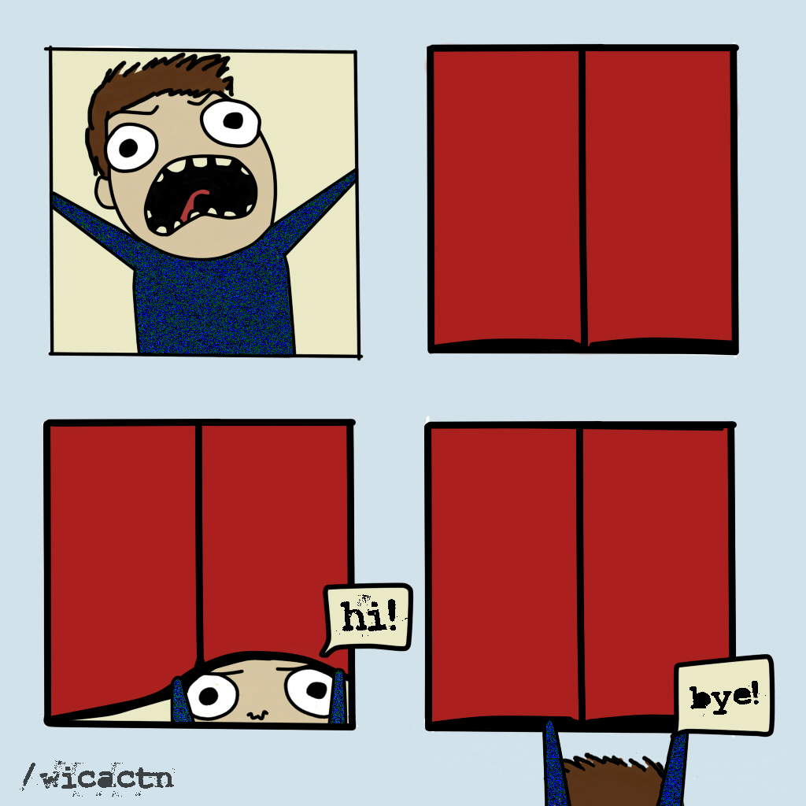
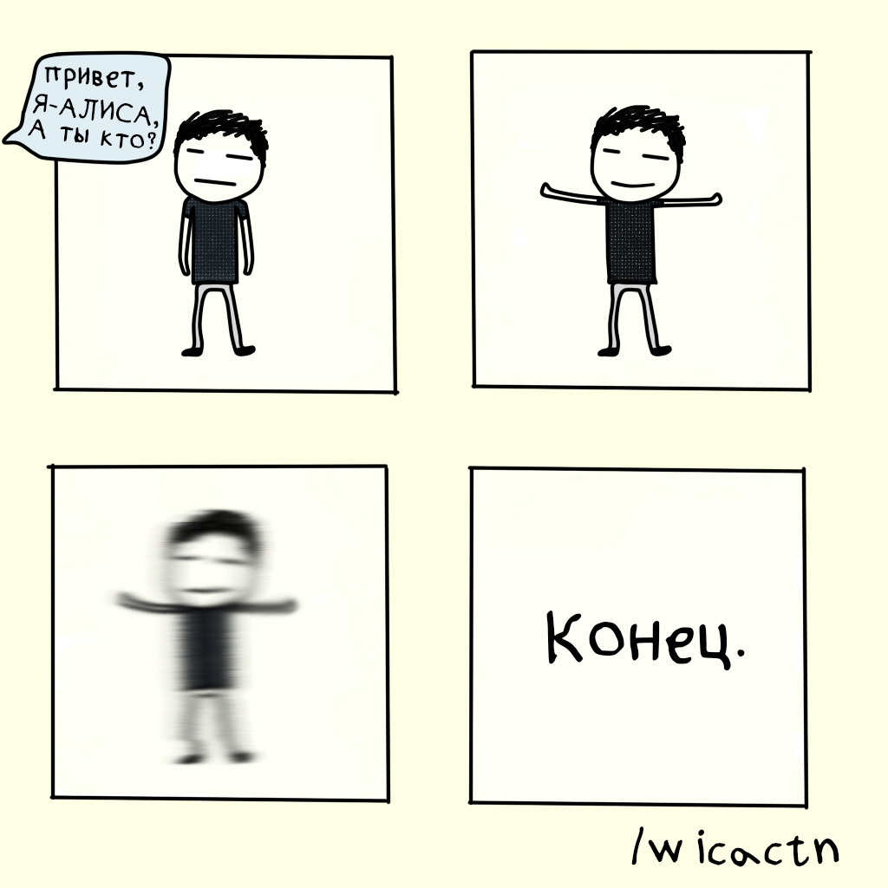

INFO
Привет!
Это мой сайт, где будет что-то для кого-то. Наверное, на первой страничке сайта нужно написать про его автора. Так вот, меня зовут J.D. и я верстаю сайты, как вы могли заметить. Также я рисую ужасные картиночки и публикую это в сеть. В моих блогах вы можете прочитать не только заметки о жизни, но и различную второсортную поэзию. Если хочешь поддержать меня, то подпишись на паблик, который должен быть где-то справа.
Это что-то вроде склада и здесь ты сможешь найти:
Всякие рисуночки, комиксы и прочую мазню
 
Стихи
И нет тут места рифме,
Читай слова, дружок,
И ты поймёшь, что редко,
Когда увидишь смысл,
Вместо созвучных слов.
И прочее дерьмо в виде ненужной информации о всяком
Факты о левшах
1. Во многих языках слово левый — синоним слов: неловкий, фальшивый, неискренний, вызывающий подозрение-то есть, как правило, окрашивается отрицательно. В английском языке синонимы слова left-handed значит «неуклюжий», «неумелый», «двусмысленный» и «сомнительный». Французское gauche означает не только «левый», но и «нечестный».
2. Леворукость считалась серьезным и физическим дефектом, но еще более подозрительными были все действия, связанные с левой стороной. Свидетели на средневековых судах над ведьмами показывают, что подсудимая «трогала скотину левой рукой», а уж если кто-нибудь видел, как обвиняемая обходила справа налево чей-нибудь дом (а дом этот вскоре сгорел), то вина несчастной считалась практически доказанной.
3. Согласно некоторым историческим хроникам, чуть ли не решающую роль в решении судей о сожжении Жанны д’Арк сыграло то, что она была левшой.
4. В Японии обнаруженная леворукость жены могла служить основанием для немедленного развода.
5. Во многих африканских племенах и в индийских деревнях до сих пор полагают, что левши — прирожденные отравители, и поэтому на всякий случай держат их подальше от кухни. Методы переучивания левшей при этом самые зверские: левую руку обжигают или ранят, чтобы лишить несчастного левшу возможности ею пользоваться.
6. В экстремальных ситуациях, в состоянии сильного утомления или стресса, когда в считанные секунды нужно принять решение и действовать, — левша, даже переученный, всегда будет инстинктивно действовать левой рукой. Известен случай, когда летчик-левша погиб из-за того, что не смог вовремя нащупать кольцо для раскрытия парашюта, которое находится справа. А каково, к примеру, милиционеру-левше, если у него по уставу кобура должна висеть справа?
7. Если левше надо провести по 20-сантиметровой линейке линию длиной 3 см, то приходится сначала напрячь мозги, вычесть 3 из 20, а потом вести линию от 20 до 17. Правша просто проводит линию от нуля до трех. Или, например, попробуйте левой рукой подвести стрелки механических часов. Для этого надо часы перевернуть вверх тормашками.
8. Мужчинам-левшам не повезло с застежками-молниями и пуговицами, особенно на внутренних карманах в пиджаках или куртках. Попробуйте, если вы правша, левой рукой застегнуть пуговицы на брюках.
9. Количество левшей все время сокращается. В каменном веке их было 50%, в бронзовом — 25%, а сейчас — всего 5%. Около 2500 левшей умирают ежегодно в результате несчастных случаев, связанных с использованием предметов, предназначенных только для правшей.
10. Спиральные лестницы в средневековых замках всегда закручены по часовой стрелке. Это очень просто объясняется — поднимающимся рыцарям, держащим меч в правой руке, гораздо труднее вести бой, чем обороняющимся рыцарям — правшам. Система хороша, но не учитывает случая, когда наступающий рыцарь — левша. Впрочем, строители замков были уверены, что среди нападающих рыцарей левшей не будет: левши считались связанными с дьяволом, и левша просто не мог стать рыцарем.